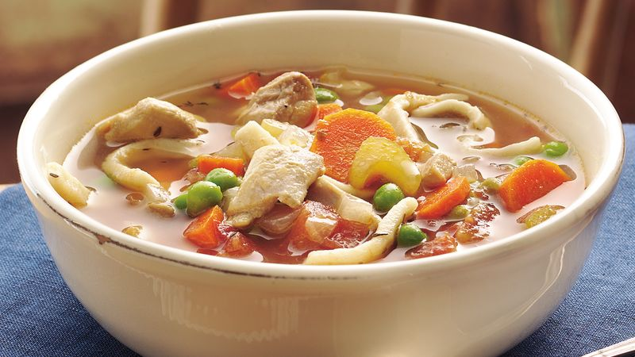

Chicken Noodle

For any day at any time, cold or not!
Serves 6-8 people.
Ingredients
- 1 tablespoon butter
- 1⁄2 cup chopped onion
- 1/2 cup chopped celery
- 4 cans chicken broth
- 1 can vegetable broth
- 1/2 pound chopped cooked chicken breast
- 1 1/2 cups egg noodles
- 1 cup sliced carrots
- 1/2 teaspoon dried basil
- 1/2 teaspoon dried oregano
- salt and pepper to taste
Instructions
- In a large pot over medium heat, melt butter.
- Cook onion and celery in butter until just tender, 5 minutes.
- Pour in chicken and vegetable broths and stir in chicken, noodles, carrots, basil, oregano, salt and pepper.
- Bring to a boil, then reduce heat and simmer 20 minutes before serving.
allrecipes.com